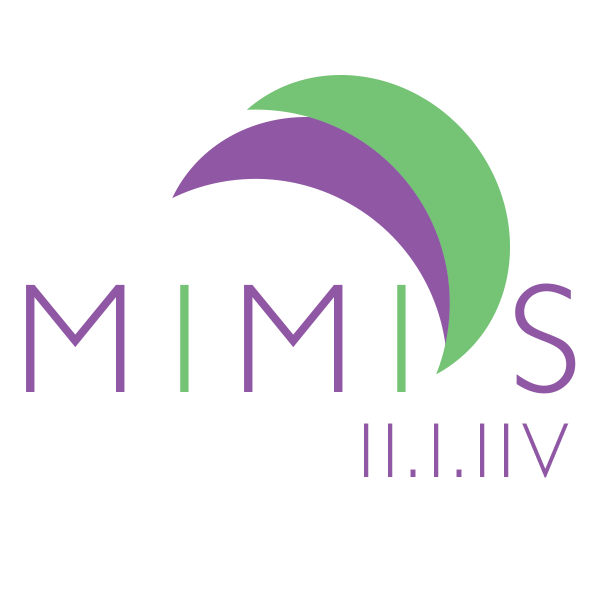
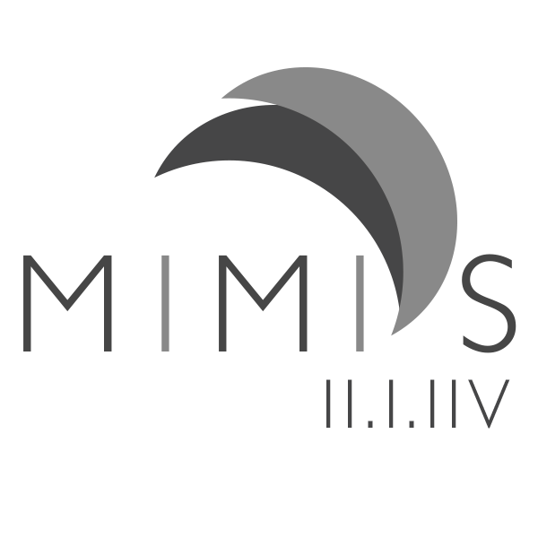
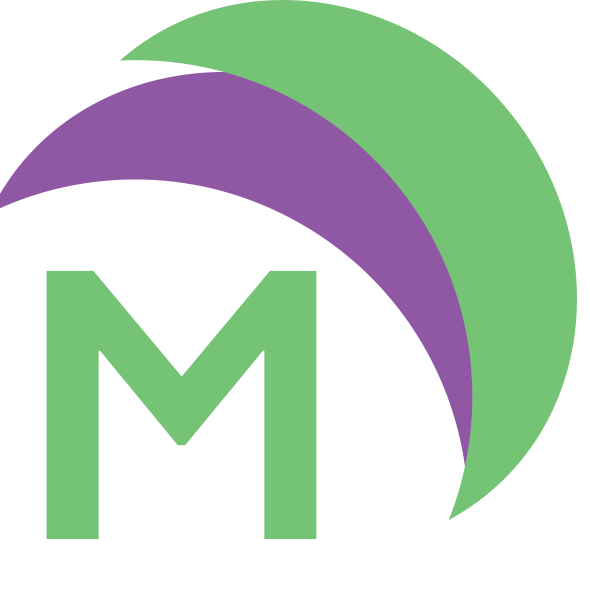

17 October, 2017

This is the logo for a fictional hair salon, called "Mimi's 213." "Mimi" was my great-grandmother's nickname and it seemed like a perfect, "old-fashioned-but-cool," name for an upscale salon that might be frequented by celebrities and young professionals.
The roman numerals are "213," which is the traditional area code for Los Angeles. It's a bit like New York's "212," and is often referenced in popular music. The use of roman numerals gives the "213" a bit of subtly and mystique. It also reinforces the idea that the salon has roots in Los Angeles. The font is Gill Sans (light). This was selected for the thin, san serif letters and the relatively tall x-height, which lends a "glamorous" and contemporary image. The font was further modified by increasing the tracking. Doing this for all-capitalized words can make them seem more elegant and readable.
The primary color is purple, which seems to be popular with beauty products. It also is associated with mystery and sophistication, which are traits that I wanted to reinforce. The light green is simply the complement of the purple. It seems to add a bit of levity and friendliness, as if Mimi's would be a great place to relax and treat yourself after a long week at work.
I intentionally avoided any obvious hair salon symbolism, like scissors or hair. My theory is that "upscale" customers would find this to be "gauche." A more abstract elegance seemed appropriate. The semicircles don't symbolize anything in particular. They do look a bit like palm fronds, which seems appropriate for an L.A. hair salon. I made them by placing one circle over another circle and using the layer subtraction to remove all but a "moon" shape.
This is the "black and white" (grayscale) version:

Here is what a favicon might look like (in 32 pixels):

This is the same favicon again, "magnified" for detail. Notice that the "M" is using Gill Sans regular instead of light. This is to help it stand out better at a smaller scale.